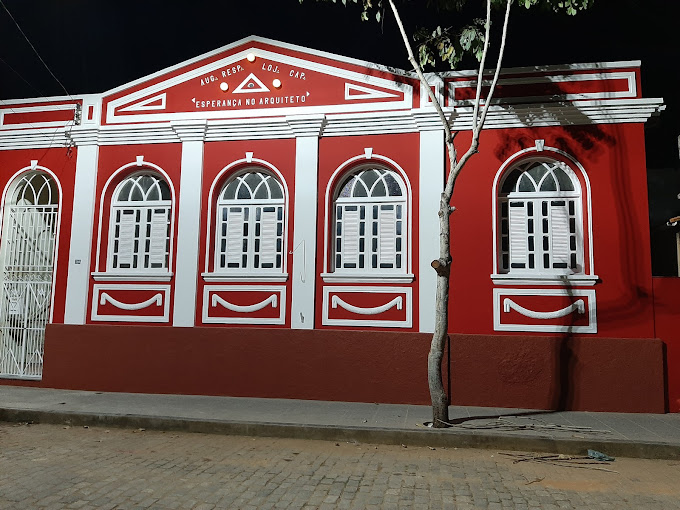
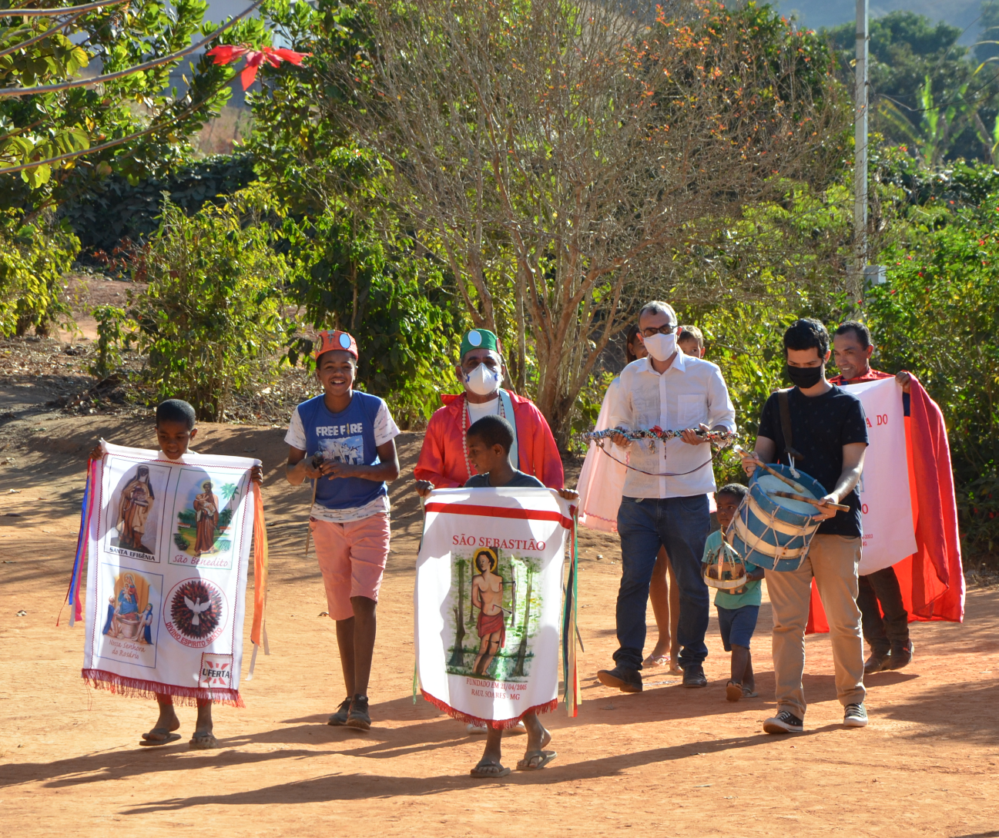
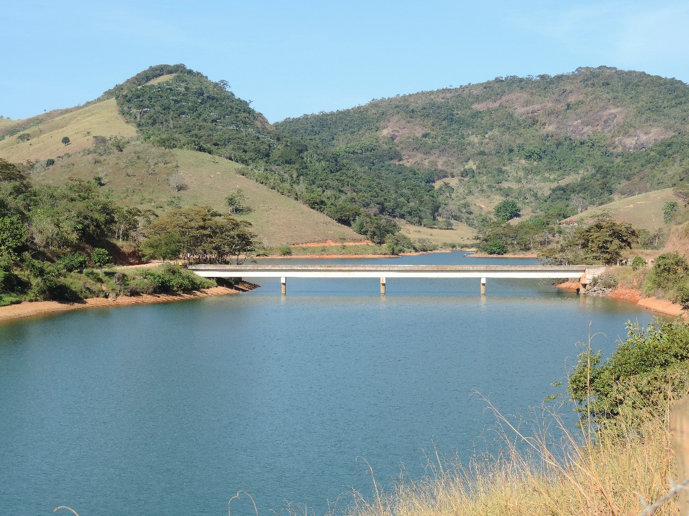
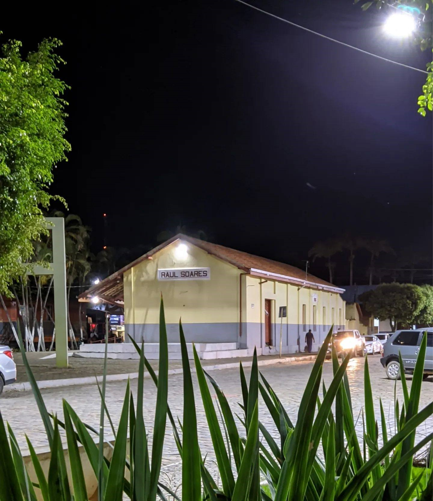
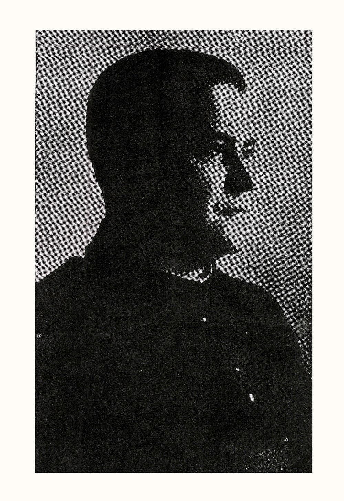

Loja Maçonica
Ler História

Quilombo Comunidade dos Bernardos
Ler HistóriaPico do Boachá
Ler História

Represa do Emboque
Ler HistóriaPrefeitos
Ler História

Estação Ferroviária
Ler História

Personalidades
Ler História